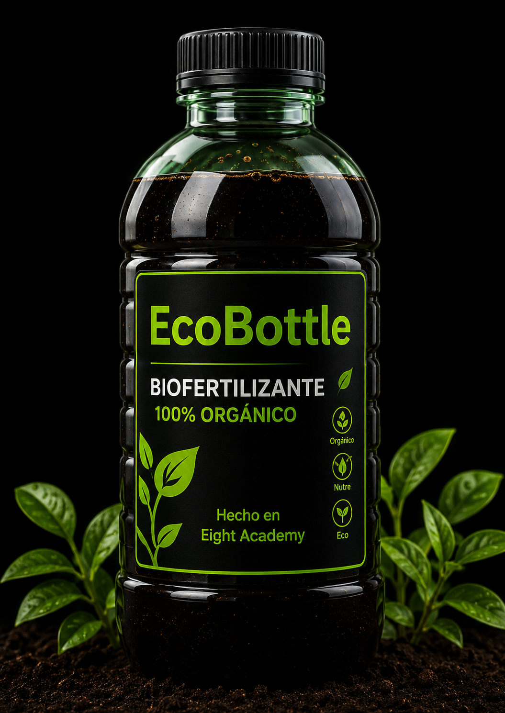
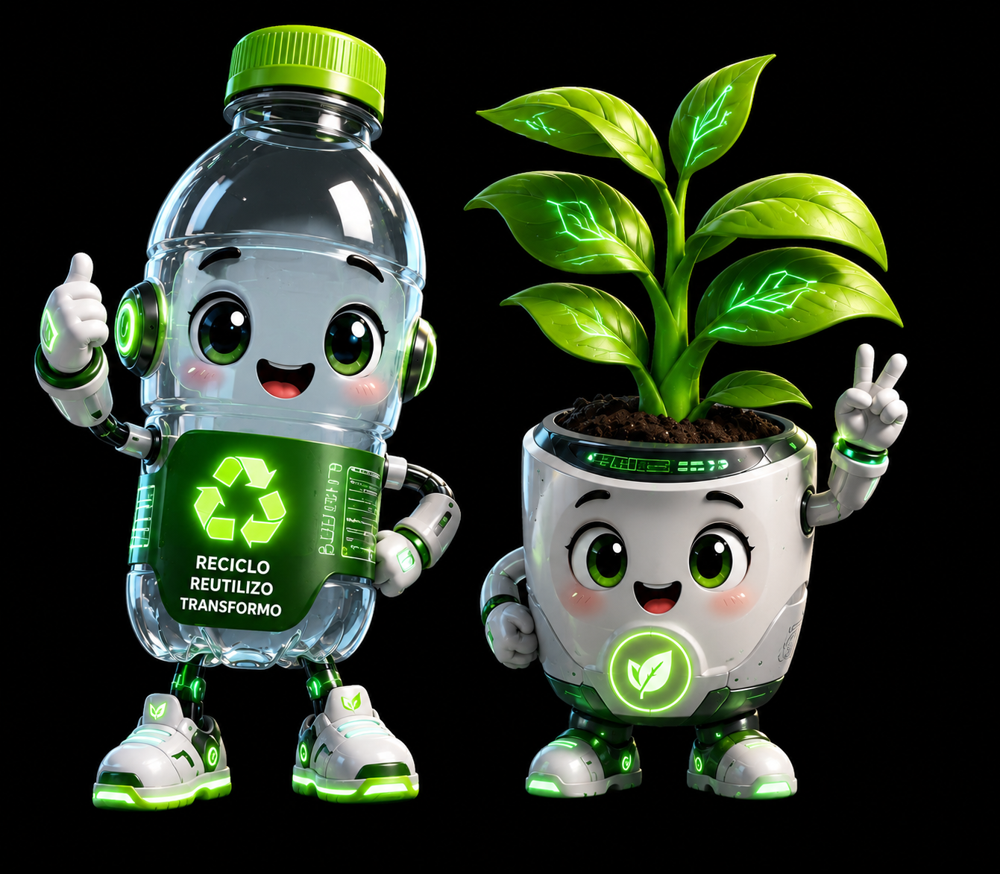

BottleBloom Station
EcoBottles con Biofertilizantes
Descubre cómo las botellas PET reutilizables se transforman en EcoBottles con biofertilizantes para generar un impacto positivo en nuestro planeta.
Escanea para ver el impacto de tu EcoBottle

El proceso en 7 pasos
De botella PET recuperada a EcoBottle lista para distribuir biofertilizante.
Conversión de botellas reutilizables en EcoBottles
Cada etapa cuida la limpieza, trazabilidad y calidad del producto final.
Beneficios del biofertilizante

Cada botella cuenta. Cada acción transforma. Cada vida florece.
Recolectamos, transformamos y florecemos junto a la comunidad Eight Academy.